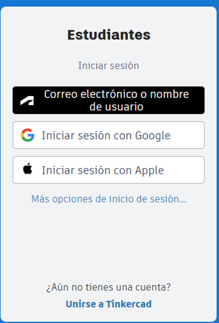

En la pantalla que vimos anteriormente, vamos a crear una cuenta de la siguiente manera:
1. Registrarse
- En la pantalla principal, busca y presiona la opción "Registrarse".
- Verás 4 opciones diferentes. Elige la opción "Cuentas de estudiante".
Dale un vistazo a la siguiente ilustración para más detalles:
2. Elegir un Correo Electrónico
- Después de elegir "Cuentas de estudiante", Tinkercad te pedirá un correo electrónico para crear tu cuenta.
- Se recomienda usar tu cuenta de Google porque es más cómodo y rápido. Haz clic en "Iniciar sesión con Google".
Consulta la siguiente ilustración para saber cómo iniciar sesión:

3. Iniciar Sesión en Google
- Se abrirá una nueva ventana para que inicies sesión en tu cuenta de Google.
- Ingresa tu correo electrónico de Google y tu contraseña. Luego, haz clic en "Siguiente".
Revisa la siguiente ilustración para aprender a hacerlo:
4. Finalizar el Registro
- Después de iniciar sesión en Google, Tinkercad completará automáticamente la creación de tu cuenta.
- ¡Listo! Ahora tienes una cuenta en Tinkercad y puedes empezar a diseñar tus propias creaciones en 3D.